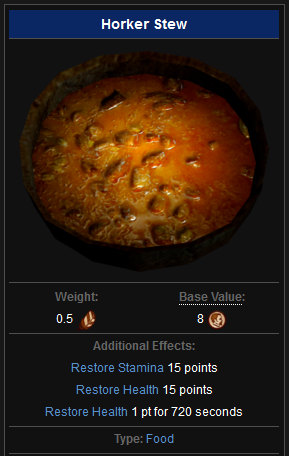

Horker Stew Recipe

What is Horker Stew?
A delicious main dish often found throughout Skyrim consisting mainly of horker meat. This dish will often leave you feeling replenished and full of life
Ingredients
- 1 large horker meat
- 1 dash of lavender
- 1 ripe tomato (or rotten if you prefer the taste)
- 1 garlic clove (minced)
How to cook
- Chop horker meat into small bite-sized chunks
- Start to cook horker meat in broth filled pan
- Mince garlic
- chop tomato
- Add lavender, tomato and garlic to the horker meat and broth
- Simmer for 10 minutes
- Serve up in a bowl and consume immediately
Return to Homepage